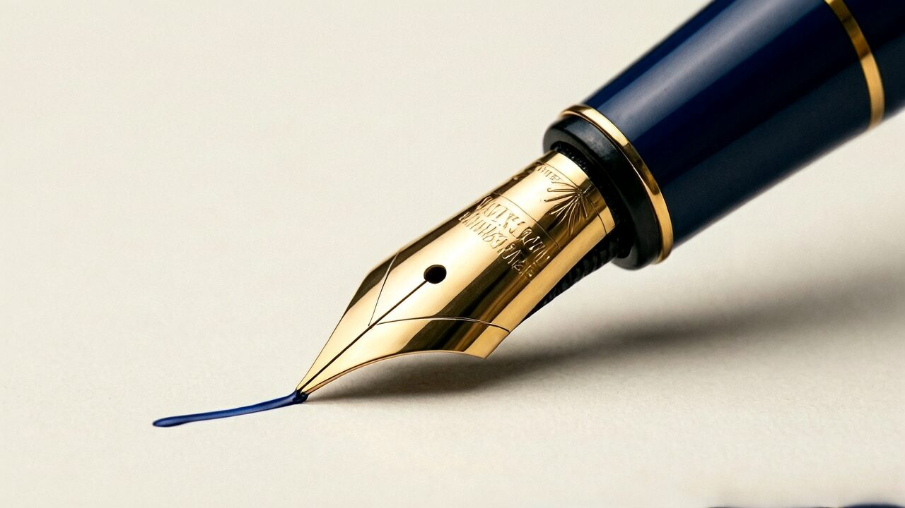
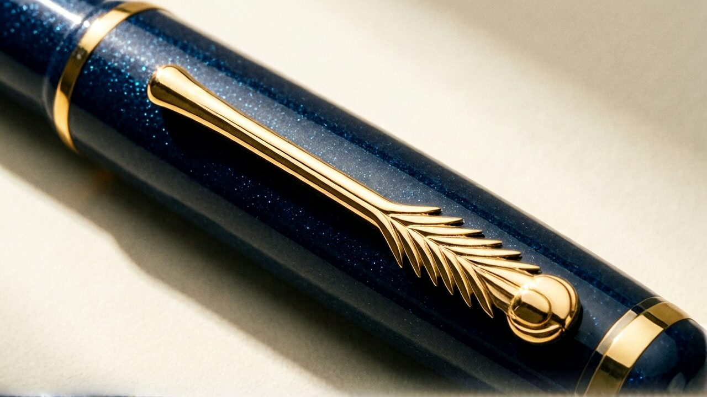
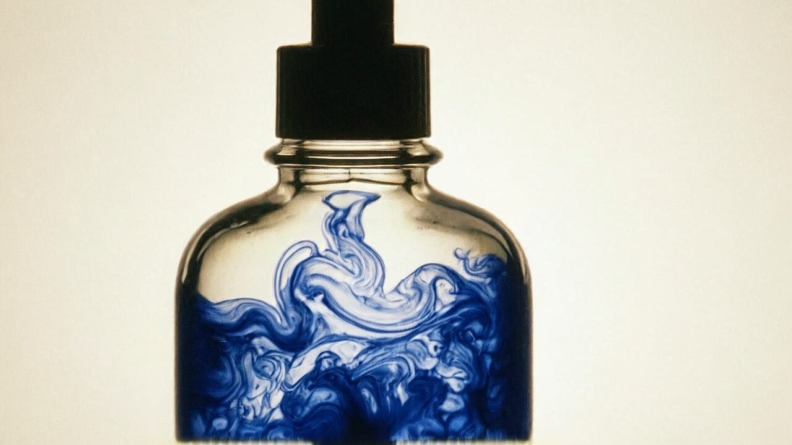
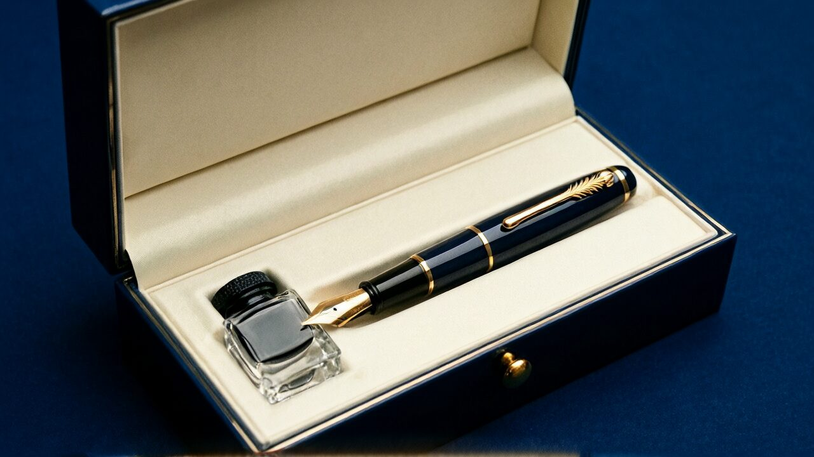
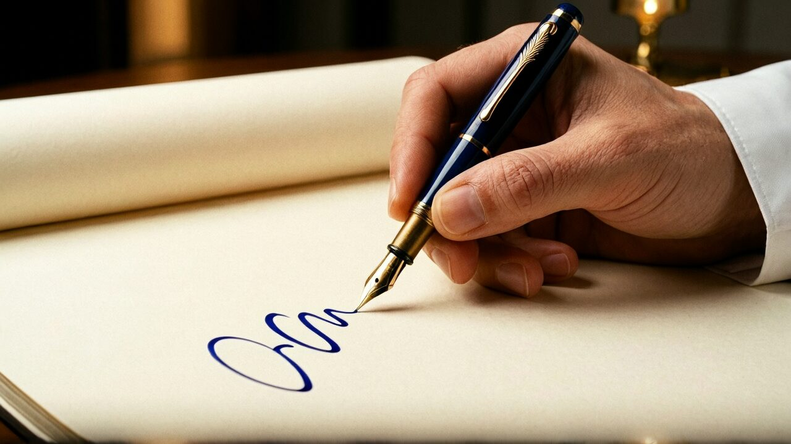
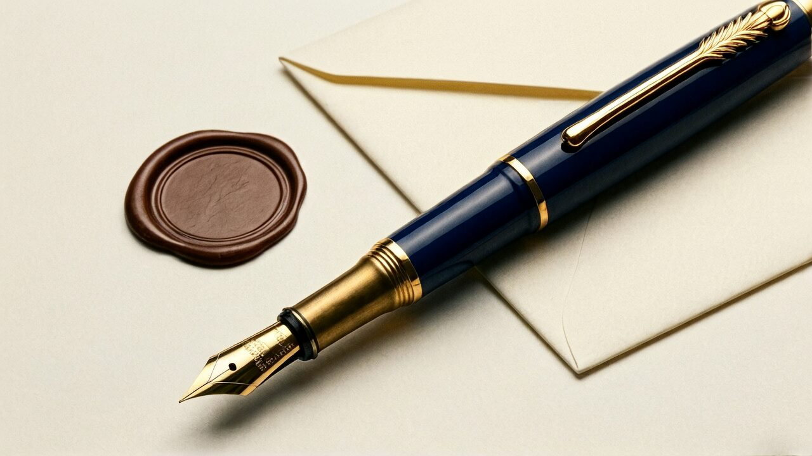
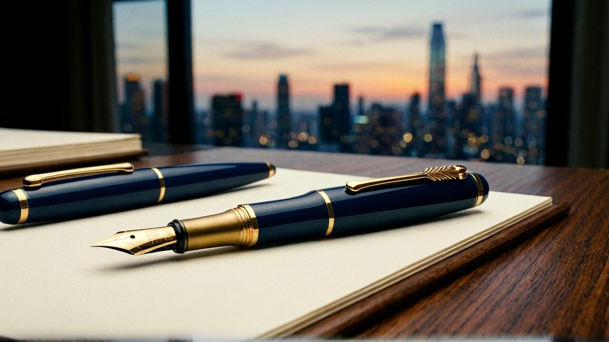

Anatomy
Lacquer, gold, and a palm frond.
Twenty layers of midnight-blue lacquer, a two-tone gold nib cut by hand, and a clip shaped like a palm frond — the oldest symbol of the Gulf.



Try it
Sign your name.
Write on the paper with your finger or mouse. The line thickens and thins like a real gold nib.
×Sign here

The gift
For a promotion, a wedding, a first contract.
Presented in a midnight lacquer box with its own ink. Engraving of initials on request.


